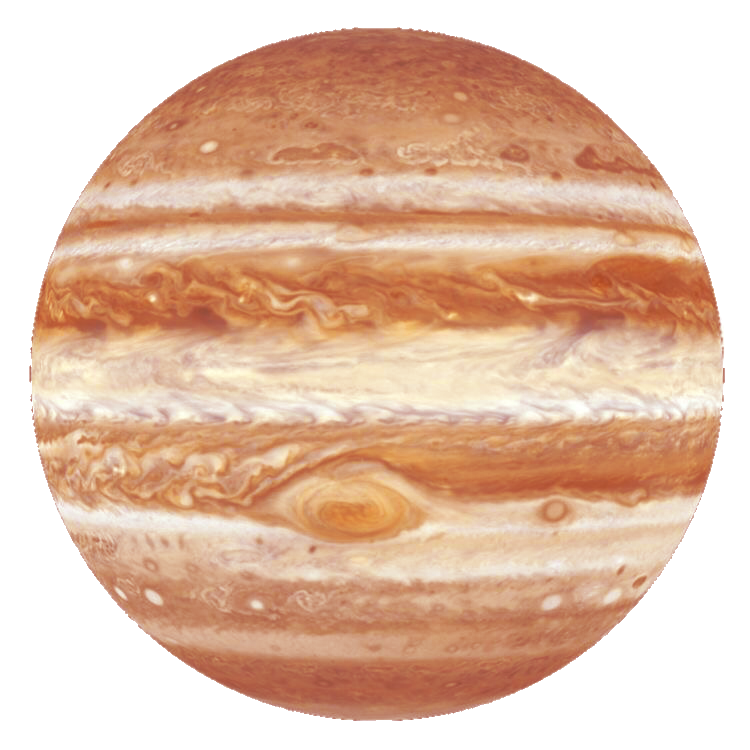
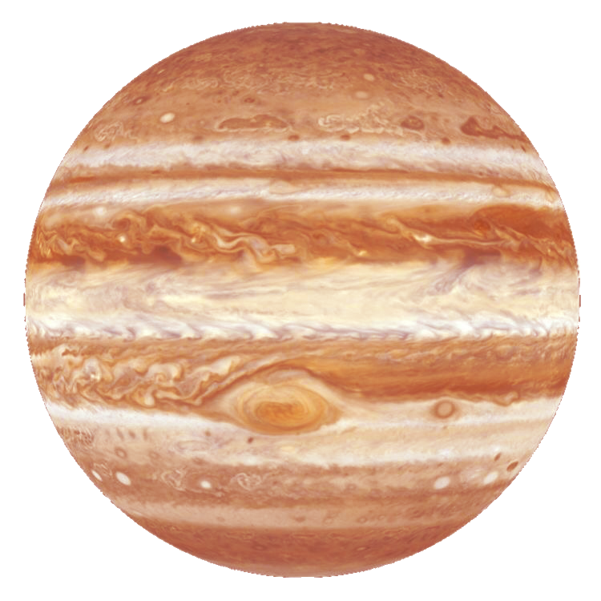
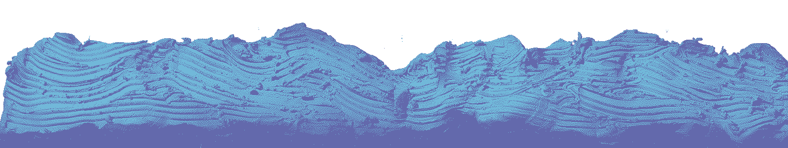
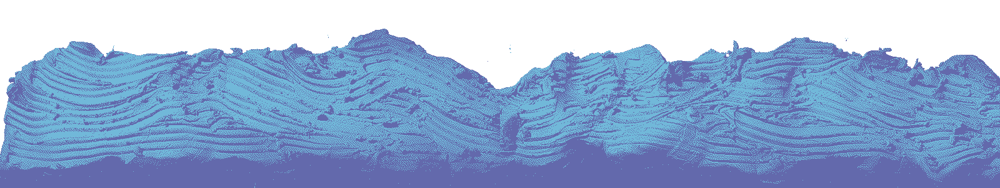

 

some animatics i've done! most of them are pretty old, and some of them don't even work thru embeds because of copyright claims :-( if it doesn't work, you can click 'view on youtube' to see it!
use the embed controls or shift+n to go to the next video!